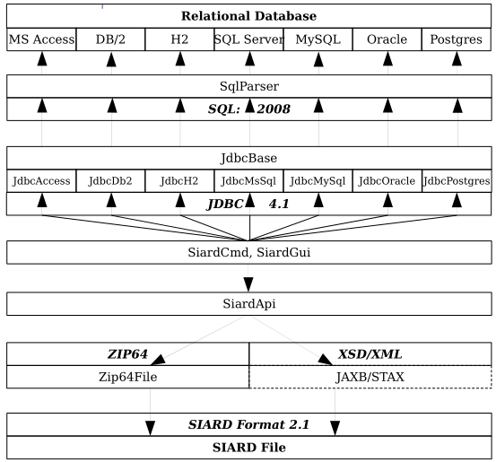
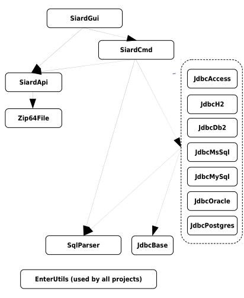

SiardGui - Developers' Manual - Architecture
Architecture
The project SiardGui is part of the SIARD (Software-Independent Archival of Relational Databases) Suite. The description of its architecture has two parts:
- Global architecture of SIARD Suite and the position of SiardGui in it,
- Local architecture of SiardGui.
Global Architecture
The SIARD project interacts with files containing archived relational databases in the SIARD Format 2.1 and 2.2 using the SIARD API.
The SIARD project interacts with relational databases using the JDBC API (4.1) and the SQL:2008 standard.
SIARD Runtime Architecture
Standards are bold and italics. The modules implement them.
SIARD Development Architecture
The SIARD project is based on the following sub-projects:
- SiardGui
- graphical user interface for downloading and uploading relational databases and editing their metadata
- SiardCmd
- command-line executables for downloading and uploading relational databases
- SiardApi
- API for reading an writing files in the SIARD Format 1.0 (read-only), 2.1 (read-only) and 2.2 (read and write).
- Zip64File
- implementation of the ZIP 64 standard
- JdbcAccess
- JDBC interface (pure Java) to MS Access databases
- JdbcDb2
- JDBC interface to DB/2 databases
- JdbcMsSql
- JDBC interface to MS SQL Server databases
- JdbcMySql
- JDBC interface to MySql databases
- JdbcOracle
- JDBC interface to Oracle databases
- JdbcPostgres
- JDBC interface to Postgres databases
- JdbcBase
- base classes for all JDBC 4.1 implementations
- SqlParser
- SQL:2008 Parser
- EnterUtilities
- various small utilities used by most projects
These projects depend on each other:
SiardGui is implemented as a separate project, because a a general ZIP64 file handler can be quite useful in its own right in other contexts than SIARD.
Local Architecture
The main class ch.admin.bar.siard2.gui.SiardGui implements the JavaFX Application class. The lib folder contains Java FX 8 in jfxrt.jar which is currently needed, because JavaFX 9 from JAVA 9 or JavaFX 10 from JAVA 10 is not backward compatible across JAVA versions.